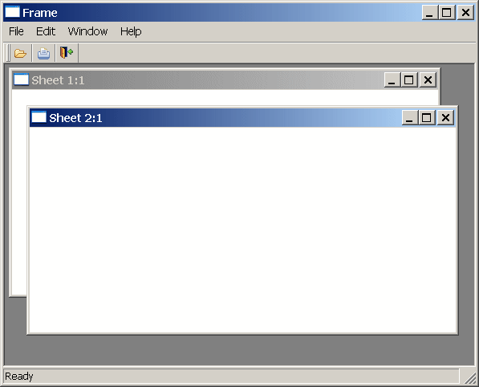

Multiple Document Interface (MDI) is an application style you can use to open multiple windows (called sheets) in a single window and move among the sheets. To build an MDI application, you define a window whose type is MDI Frame and open other windows as sheets within the frame.
Most large-scale Windows applications are MDI applications. For example, PowerBuilder is an MDI application: the PowerBuilder window is the frame and the painters are the sheets.
If you expect your users to want to open several windows and easily move from window to window, you should make your application an MDI application.
 Using the Template Application feature When you create a new application, you can select the Template
Application Start wizard and then choose to create an SDI or MDI
application. If you select MDI application, PowerBuilder generates
the shell of an MDI application that includes an MDI frame (complete
with window functions that do such things as open or close a sheet),
a sheet manager object and several sheets, an About dialog box,
menus, toolbars, and scripts.
Using the Template Application feature When you create a new application, you can select the Template
Application Start wizard and then choose to create an SDI or MDI
application. If you select MDI application, PowerBuilder generates
the shell of an MDI application that includes an MDI frame (complete
with window functions that do such things as open or close a sheet),
a sheet manager object and several sheets, an About dialog box,
menus, toolbars, and scripts.
An MDI frame window is a window with several parts: a menu bar, a frame, a client area, sheets, and (usually) a status area, which can display MicroHelp (a short description of the current menu item or current activity).

The MDI frame is the outside area of the MDI window that contains the client area. There are two types of MDI frames:
Standard frames A standard MDI frame window has a menu bar and (usually) a status area for displaying MicroHelp. The client area is empty, except when sheets are open. Sheets can have their own menus, or they can inherit their menus from the MDI frame. Menu bars in MDI applications always display in the frame, never in a sheet. The menu bar typically has an item that lists all open sheets and lets the user tile, cascade, or layer the open sheets.
Custom frames Like a standard frame, a custom frame window usually has a menu bar and a status area. The difference between standard and custom frames is in the client area: in standard frames, the client area contains only open sheets; in custom frames, the client area contains the open sheets as well as other objects, such as buttons and StaticText. For example, you might want to add a set of buttons with some explanatory text in the client area.
In a standard frame window, PowerBuilder sizes the client area automatically and the open sheets display within the client area. In custom frame windows containing objects in the client area, you must size the client area yourself. If you do not size the client area, the sheets will open, but may not be visible.
The MDI_1 control When you build an MDI frame window, PowerBuilder creates a control named MDI_1, which it uses to identify the client area of the frame window. In standard frames, PowerBuilder manages MDI_1 automatically. In custom frames, you write a script for the frame's Resize event to size MDI_1 appropriately.
 Displaying information about MDI_1 You can see the properties and functions for MDI_1 in
the Browser. Create a window of type MDI and select the Window tab
in the Browser. Select the MDI frame window and select Expand All
from the pop-up menu. MDI_1 is listed
as a window control, and you can examine its properties, functions,
and so forth in the right pane of the Browser.
Displaying information about MDI_1 You can see the properties and functions for MDI_1 in
the Browser. Create a window of type MDI and select the Window tab
in the Browser. Select the MDI frame window and select Expand All
from the pop-up menu. MDI_1 is listed
as a window control, and you can examine its properties, functions,
and so forth in the right pane of the Browser.
Sheets are windows that can be opened in the client area of an MDI frame. You can use any type of window except an MDI frame as a sheet in an MDI application. To open a sheet, use either the OpenSheet or OpenSheetWithParm function.
Often you want to provide a toolbar for users of an MDI application. You can have PowerBuilder automatically create and manage a toolbar that is based on the current menu, or you can create your own custom toolbar (generally as a user object) and size the client area yourself.
For information on providing a toolbar, see the chapter on menus and toolbars in the User's Guide . For more information on sizing the client area, see "Sizing the client area ".